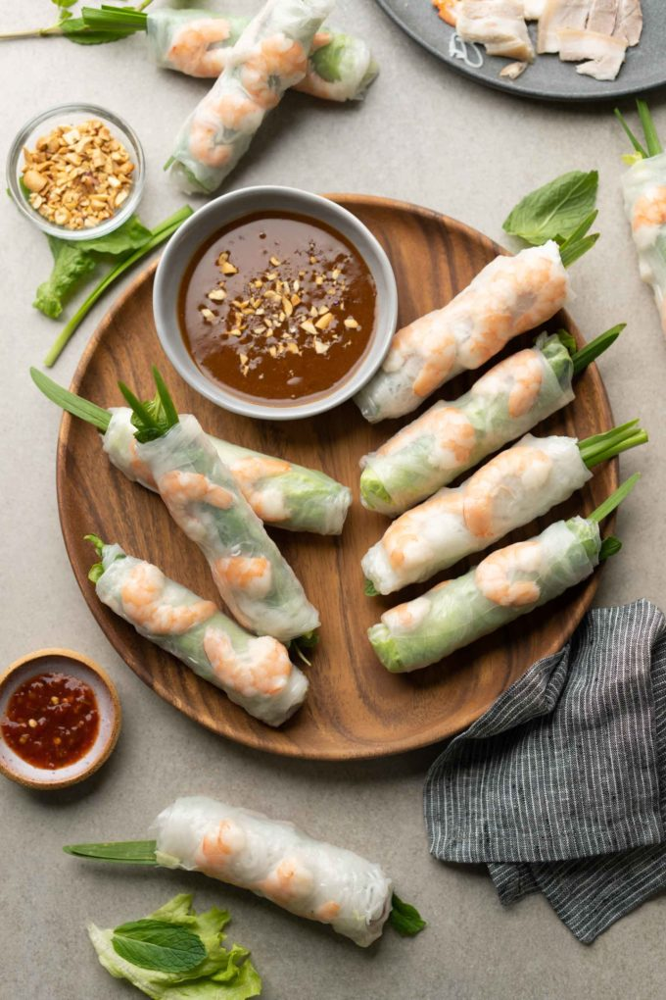

Gỏi Cuốn Recipe

Description
Gỏi Cuốn are Vietnamese spring rolls made with rice
paper and typically filled with rice noodles, lettuce, herbs, and
meat. Gỏi cuốn are dipped in a sweet and savory hoisin-peanut sauce.
Ingredients
Meat
Veggies
- 1 head of green lettuce
- 1 bunch of mint
- 1 bunch of chives
- 1 bunch of Thai basil
Peanut Sauce
- 2 tbsp vegetable oil
- 2 tbsp minced garlic
- Equal parts hoisin, peanut butter, and water
Other Ingredients
- Dried rice paper wrapper
- Dried thin rice noodles
Steps
Prep
- Boil the pork belly until it is cooked completely. Remove from
water and set aside to cool
- Thaw the shrimp, devein, and slice in half
- Cook the rice noodles according to package instructions and set
aside
- Wash the veggies
- Heat the vegetable oil in a saucepan on low and add the minced
garlic, sauteing until fragrant
- Add equal parts hoisin, peanut butter, and water to the sauce
pan and incorporate all ingredients as they heat. Add the hoisin
or the peanut butter before the water to prevent hot oil from
splashing.
- Once the peanut sauce is warm and the hoisin, peanut butter, and
water are mixed together, take the saucepan off the heat
- Slice the pork belly thin
Assembly
Now the fun part: Wrapping the spring rolls!
- Fill a large pot with warm water. We will use this to dip the
rice paper wrappers.
- Dip the rice paper wrappers into the water for 5 to 10 seconds.
They should be wet but not soft
- Carefully place the rice paper onto a plate with part of the
edge of the rice paper hanging over the edge of the plate. This
will make it easier for us to wrap the spring rolls.
- Next, lay down a leaf of lettuce in the middle of the rice
paper and then the Thai basil and chive.
- Add some rice noodles, sliced pork belly, and shrimp
- Fold the sides of the rice paper in and then roll to create the
spring rolls. This takes practice!
- Dip into the peanut sauce and enjoy!